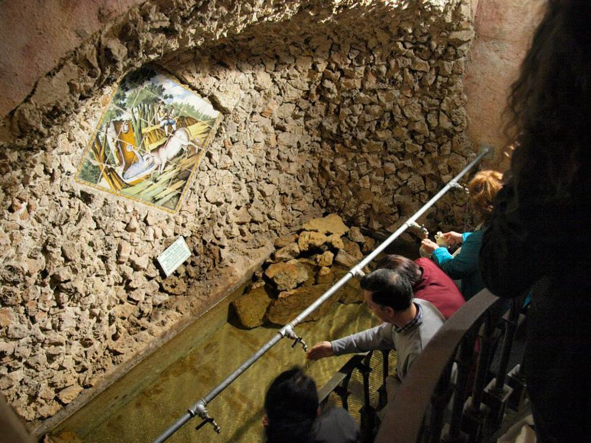
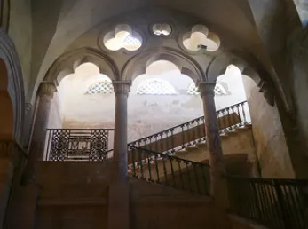

Ottimo lavoro, esploratore! La tua sfida ha inizio.
Ti trovi nel cuore della leggenda. Scansionando il codice in questo luogo, potrai ascoltare il racconto del miracolo del bue e del ritrovamento del quadro sacro.
Ma attenzione: per passare alla prossima tappa, dovrai risolvere l'enigma nascosto tra le decorazioni della roccia.


Ogni tappa è contrassegnata da un QR-Code posizionato sui luoghi chiave del borgo. Scansionando il codice con il tuo smartphone, sblocchi contenuti multimediali esclusivi: audio, video, mappe e indizi per la tappa successiva.
Parti dalla piazza principale e lasciati guidare dalle storie di Erchie fino all'ultima rivelazione.
Torna a Cosa Offriamo